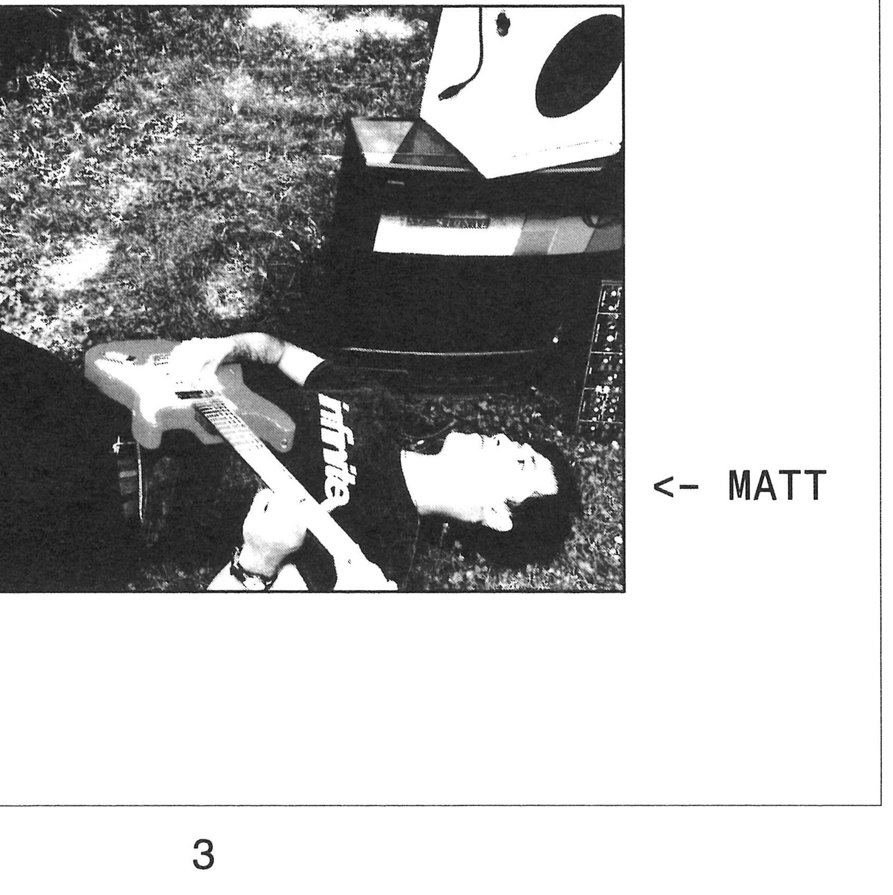

my work spans HCI, musical instrument design, cognitive science, art installations, electronics, and AI research.
i'm currently a phd student at stanford.
i am a hertz fellow and steve jobs archive fellow.
from grief (for AI & live sewage), tiat gallery
i do not believe in separating my science, art, and engineering. they are lost children of the same great continent [2]
| 2026 | Unconventional Communication, CogSci / Rio de Janeiro, Brazil | workshop |
| 2026 | blood computer, tiat Gallery / San Francisco, CA | exhibition |
| 2026 | Lagu Hantu, NIME / London, UK | paper |
| 2026 | Lagu Hantu, Mission Dolores Park / San Francisco, CA | installation |
| 2026 | Two Sparrows, Spatial Audio Gathering / Leeds, UK | composition |
| 2026 | grief (for AI & live sewage), tiat Gallery / San Francisco, CA | installation |
| 2025 | Two Sparrows, Transitions, Stanford Center for Computer Research in Music and Acoustics / Stanford, CA | performance |
| 2025 | MP3 player, Future Finds, Bathers Library / Oakland, CA | exhibition |
| 2025 | Accidental instruments: Finding expressiveness in desks, parks, and AI's shortcomings, ICMC / Cambridge, MA | talk |
| 2025 | A Computational Model of Human Vocal Imitation, CogSci / San Francisco, CA | paper |
| 2025 | Sound and Language, MIT Museum / Cambridge, MA | talk |
| 2025 | Melia: An Expressive Harmonizer at the Limits of AI, NIME / Canberra, Australia | paper |
| 2024 | Sketching With Your Voice: "Non-Phonorealistic" Rendering of Sounds via Vocal Imitation, SIGGRAPH Asia / Tokyo, Japan | paper |
| 2024 | melia, Center for the Arts at MIT / Cambridge, MA | performance |
| 2024 | Real-time In-browser Time Warping for Live Score Following, Web Audio Conference / West Lafayette, IN | paper |
| 2021 | Étude, Marvin Hamlisch International Film Scoring Awards / Stamford, CT | composition |
| 2021 | Hyperfest, Opera of the Future, MIT Media Lab / Cambridge, MA | installation |
| 2020 | The KeyWI: An Expressive and Accessible Electronic Wind Instrument, New Interfaces for Musical Expression / Birmingham, UK | paper |
at stanford, i research in the cognitive tools lab [judy fan] and shapelab [sean follmer].
i went to college at MIT, where i studied computer science, music, math, and literature. i worked on machine listening systems [eran egozy], poetry and AI [joshua bennett], and vocal communication [josh tenenbaum, jrk].
i'm one half of bad science.
